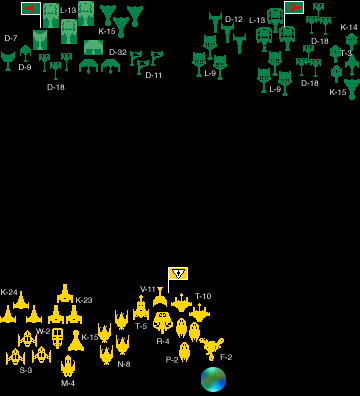
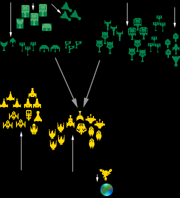
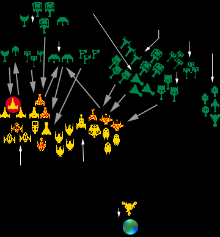
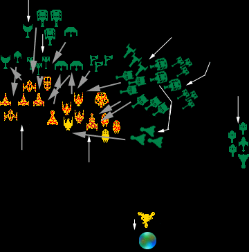
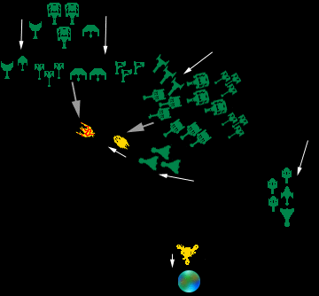

| Name: | The Massacre at Mantiev |
|---|---|
| Campaign Date: | 2/2505.01 (Day 31) |
| Location: | Mantiev System, The Triangle (11.0S, 6.7E) |
| Opponents: |
Mantiev Colonial Association
Mobile Defense Force, Fleet Commander Joy Thompson commanding Mantiev System Garrison, Fleet Commander Joy Thompson commanding [Joy Murphy, Phil Gunther, David Ternes, Keith Yingling] |
|
Klingon Empire (Klingon Space Navy)
Battle Group Massivid, Thought Admiral Massavid commanding Battle Group Krraa'zi, Admiral Krraa'zi commanding [Matt Taylor, Scott Smith] |
|
| Play Date: | 7 September 2002 |
| Play Location: | The Keep, Fort Wayne, Indiana |
| Info Available: |
Battle Description
Order Of Battle Mantiev Colonial Association Order Of Battle Klingon Empire |
Description of the Massacre at Mantiev
Introduction
To the Klingons it was known as Operations Snatch and Grab. To the Mantiev Colonial Association it was simply a disaster. The Klingons had serious damage to two ships and minor damage to another. The MCA lost its only active fleet, a major garrison, and its only space outpost. The bravery of the Mantiev space force had proven no match for the overwhelming numbers of Klingon pirates.
Strategic Background
Mantiev Colonial Association (MCA)
The Triangle War was well underway. The MCA had been working hard to avoid becoming involved. They knew well that their small military was no match for even a single fleet from one of the great powers. Their primary hope had been that the MCA simply was not worth the attention of anyone.
On 2/2504.26 the intelligence branch of the MCA Space Navy was informed by the Affiliation of Outer Free Worlds that Klingon forces were suddenly and unexpectedly on the move in the southern Triange. Concerned as to what this might mean, the MCA shifted its Mobile Defense Fleet from its regular base at Kallendeva to the capital at Mantiev, where it would be better able to react to any moves by the Klingons.
Klingon
While sitting in the Verianne system and guzzling blood wine, Admiral Krraa'zi concocted a scheme to relieve the boredom of his fleet training. He proposed to Thought Admiral Massavid that they "forcefully acquire" the defense outpost at the Mantiev system. It seemed like a chance for combat without putting anything serious at risk. He named the attack portion of the plan "Operation Snatch", and the theft of the repair outpost as "Operation Grab".
Thought Admiral Massavid, having prepared what was known as Operation Hammer, sought to gain the support of Admiral Krraa'zi. Krraa'zi finally agreed to help with Operation Hammer, provided Massavid would first support him at Mantiev.
On 2/2504.21 Operation Grab began as the transport Big Puller left Starbase 1, and the transport Draft Horse left Starbase 2. Two days later Battle Group Krraa'zi left the Verianne system and Battle Group Massavid departed from Starbase 2 on Operation Snatch. All forces were to meet outside of the Mantiev system on 2/2505.01.
Battle Preparations
|
Mantiev Colonial Association
There were no advance preparations. The Mobile Defense Force (MDF) arrived at Mantiev on 2/2504.30, but was not expecting any form of attack. When the Klingon force appeared at the edge of the system, Fleet Commander Thompson, on her flagship, the cruiser Defender, did the only thing she could, prepare for battle. The MDF and the system's garrison were quickly organized into two combat groups and deployed near their planet, which everyone thought was the target of the attack. Both combat groups were ordered to concentrate on the one battle group on the Klingon right. As the warships assumed their formations, the three unarmed freighters present with the garrison, withdrew from the area, escorted by the repair tender Eldorado. Klingons The Klingon approach to the Mantiev system was typically unsubtle, but effective. Each battle group formed around its flagship. The repair ships and the two transports were placed well behind the battle groups. Admiral Massavid formed a special attack group of four scouts around an assault ship on his left flank. Also, for some unknown reason, Admiral Krraa'zi had his five cloak capable ships enter the system and the battle cloaked. How this was supposed to be meaningful when faced by the small Mantiev force is unclear. |
 |
The Battle
|
Opening Moves
Both sides began the battle in earnest. The Mantiev force advanced very rapidly toward the Klingons, using most of their power for movement and not arming their weapons. This allowed them to close with the Klingons, and to bring their smaller beam weapon into effective range quicker Although a number of Klingon ships fired while the Mentievs were at long range, only a few hit, and all of these were targeted on the Mantiev flagship. Unfortunately for Admiral Thompson, the only ship which had medium range weapons was the flagship, Defender, and it was unable to obtain a lock. Klingon fire knocked out the flagship's sensors almost immediately. As the Mantiev fleet advanced, the unarmed repair outpost Salvation began a slow crawl away from the battle, hoping to find safety behind the planet. |
 |
|
The Massacre Begins
Having rushed toward the enemy, the Mantiev fleet rapidly slowed. The sudden drop in speed allowed them to transfer significant power to their weapons, and so to engage the enemy. Also without warning, the Klingons slowed, expecting the Mantiev's to continue their headlong rush. The result was unfortunate for the Mantiev force, as the Klingon's longer ranged weaponry was better able to hit the Mantievs than they were able to reply. The first Mantiev ship lost was the escort Coalition. It was quickly followed by the assault ship Rockwall. The destruction of this ship cost the Mantiev's over 2,000 personnel, as the Rockwall carried a full compliment of marines. Moments later the fire from Battle Group Massavid took its toll. In quick succession, the scout Vigilant, the escort Freedom, the destroyers Protector and Guardian, and the cruiser Defender all disintegrated under massive disrupter and photon torpedo barrages. At the same time the escort Liberty exploded as its warp core overloaded due to heavy damage to the ship. It is assumed that Admiral Thompson died with her ship, as her body was never found after the battle. Mantiev return fire succeeded in piercing the shields of the Klingon cruisers Swooping Hawk and Bringer of Justice and doing modest damage. |
 |
|
The Mantiev Fleet Dies
Both sides continued to close with each other, slowly. Under fire from Admiral Krraa'zi's fleet, the scout Watchful and the cutter Gage fell apart. A few seconds later the rest of Battle Group Krraa'zi and all of Battle Group Massavid fired. Almost simultaneously all but two ships of the Mantiev fleet were destroyed. Only the gunboat Union and the cutter Dutchess remained intact; and the Dutchess momentarily lost all power due to its heavy damage. The Mantiev's did not die without at least hurting the Klingons. The cruisers Swooping Hawk and Bringer of Justice were again hit with heavy damage, and the cruiser Seeker took light damage. |
 |
|
The End
The end of the battle was a walk-over, like the rest of the battle. The last Mantiev ships tried to turn away, but were too badly damaged to have even a slight hope of an escape. A few disrupter shots hit the Union, which fell apart. Two disrupters from Battle Group Krraa'zi seriously damaged the Dutchess which was forced to eject its warp core to prevent an explosion. With severe superstructure damage, the little ship had to shut down all power and drift. The two Klingon battle groups immediately turned toward the planet at high speed. As it passed the Dutchess, the Nightmare, Admiral Krraa'zi flagship, tractored the little ship and set it on a course for the Mantiev sun. As they approached the repair outpost the Klingons issued a demand for its surrender. Expcting to be destroyed, the station's commander had already begun beaming personnel to the planet. At first he wanted to destroy the outpost, but cooler heads determined that there was insufficient time to evacuate the station before it would have to self-destruct. Hoping to save lives, the station surrendered. Personnel continued to beam down. The Klingon marines who transported onto the outpost ignored the last refugees, and quietly secured the station. As soon as the station was secured, Admiral Massavid ordered the frigate Great Sword to take it in tow and move it away from the planet. A short while later, the transports Big Puller and Draft Horse arrived and took over the tow. After a brief check of battle damage, the Klingon battle groups, with the repair outpost in tow, turned and headed for the edge of the system. |
 |
|
Postscript
A few hours after the Klingon forces left the vicinity of the planet, two large system shuttles left Mantiev and chased down the helpless cutter Dutchess. With no little effort, they were able to reverse its course and eventually tow the ship back to Mantiev. The repair tender Eldorado, which had been ordered away from the battle, was recalled. The next day it began repair work on the Dutchess. |
|
Analysis
Mantive Colonial Association
The Mantiev force never had a chance. Either of the two battle groups in the attack could have destroyed the defenders. The only question was how much damage could be done by the Mantievs.
The deployment of the entire force against a single battle group was an excellent maneuver. It forced Battle Group Massavid to maneuver around Battle Group Krraa'zi, which kept them farther from the fight. It also allowed the Mantiev ships to concentrate their fire against a couple of Klingon ships, thus maximizing the damage from their weak weapons.
The only fault with the Mantiev performance was the reduction in speed once they began to get near the Klingons. Slowing when they did, coupled with the slowing by the Klingons, meant that their weaponry was still not in effective range. Shots taken by the Mantiev ships typically had only a 20 to 30 percent change of hitting at a range where the Klingon ships had 40 to 60 percent chances due to their longer ranged weapons. While moving faster would not have saved the Mantievs, it almost certainly would have allowed them to do more damage.
Klingons
There was very little the Klingons could do wrong. They had an overwhelming force, and not even the worst possible commander could have lost this battle. The issue was; how quick would the enemy be destroyed.
One notable oddity was Admiral Krraa'zi's handling of his cloaked ships. He approached the system with the ships cloaked. They remained so at the start of the battle. While this meant they would not be damaged, it also meant that the moment the battle group advanced, it left them behind. Not until the battle was well underway did the ships drop their cloaks and engage normally. While only a minor error, it does suggest that Krraa'zi may have a fascination with cloaked ships which does not reflect well in their tactical deployment.
Thought Admiral Massavid also appears to have committed a minor error. When engaging the Mantiev forces, his ships concentrated their fire on just one or two vessels. While an effective tactic against larger warships, in this case it simply meant that much of the fire power was wasted on empty space, as the targets disintegrated well before all the ships' weapons hit.
Conclusion
Amazingly, neither side made any really major mistakes during the battle. While there was never a real possibility of the Mantiev force seriously hurting the Klingons, they gave a respectable amount of damage considering the fire power brought to bear against them. For their part, the Klingons simply overwhelmed the Mantievs, and could not do too much wrong.
Massacre at Mantiev - Order of Battle
Mantiev Colonial Association / Mantiev Space Navy
Mobile Defense Force - Fleet Commander Joy Thompson
| Ship Name | Class Name | Type | Class | Players |
|---|---|---|---|---|
| Defender | V-11 Stormbird 1 NC | CA | VII | Joy Murphy |
| Protector | T-10 Bright One 1 NC | DD | VI | Joy Murphy |
| Guardian | T-10 Bright One 1 NC | DD | VI | Joy Murphy |
| Liberty | K-24A Winner | PE | VII | Phil Gunther / Keith Yingling* |
| Libertine | K-24A Winner | PE | VII | Phil Gunther / Keith Yingling |
| Liberation | K-24A Winner | PE | VII | Phil Gunther / Keith Yingling |
| Freedom | K-23B Little Killer | PE | V | Phil Gunther / Keith Yingling |
| Independence | K-23B Little Killer | PE | V | Phil Gunther / Keith Yingling |
| Coalition | K-23B Little Killer | PE | V | Phil Gunther / Keith Yingling |
| Dauphin | P-2 Ranajmar 4 | PC | II | Joy Murphy |
| Dutchess+ | P-2 Ranajmar 4 | PC | II | Joy Murphy |
| Gage | P-2 Ranajmar 4 | PC | II | Joy Murphy |
| Watchful | S-3 Free Flight 12 | PS | IV | Phil Gunther / Keith Yingling |
| Vigilant | S-3 Free Flight 12 | PS | IV | Phil Gunther / Keith Yingling |
| Looker | S-3 Free Flight 12 | PS | IV | Phil Gunther / Keith Yingling |
| Eldorado | S-4A Mender | AR | VI | Withdrew |
| + | Only ship to survive the battle. | |||
| * | Keith took over when Phil had to leave for a (yuck!) LARP game. | |||
Mantiev System Garrison
| Ship Name | Class Name | Type | Class | Players |
|---|---|---|---|---|
| Salvation | F-2 Nestar 1 | SS | IX | David Ternes |
| Teton | G-6A Catapult | AK | VIII | Withdrew |
| Darke | I-4 Graffler 1 | AK | VI | Withdrew |
| Napa | I-4 Graffler 1 | AK | VI | Withdrew |
| Rockwall | M-4 Wings of Justice 1 | APA | IX | Joy Murphy |
| Wasatch | T-5A Throne Seeker | APA | VII | Phil Gunther / Keith Yingling* |
| Savage | K-15A Unseen Creeper | PS | IV | Phil Gunther / Keith Yingling |
| Union | N-8 Mandukam 1 | PG | II | Joy Murphy |
| Confederation | N-8 Mandukam 1 | PG | II | Joy Murphy |
| Association | N-8 Mandukam 1 | PG | II | Joy Murphy |
| Reconciliation | N-8 Mandukam 1 | PG | II | Joy Murphy |
| Shield | R-4 Mularr 1 | PE | IV | Joy Murphy |
| Silenus | W-2A Koreba | WS | II | Phil Gunther / Keith Yingling |
Klingon Empire / Klingon Space Navy
Battle Group Massavid - Thought Admiral Massavid
| Ship Name | Class Name | Type | Class | Player |
|---|---|---|---|---|
| Kimrato's Battle Squadron | Matt Taylor | |||
| Irresistible Force | L-13D Fat Man NC | BB | XI | |
| Big Bully | L-13D Fat Man NC | BB | XI | |
| General Martok | L-13D Fat Man NC | BB | XI | |
| Najgab's Cruiser Squadron | Matt Taylor | |||
| Swift Pursuit | D-12B Death Boot | CA | IX | |
| Death March | D-12B Death Boot | CA | IX | |
| Steel Boot | D-12B Death Boot | CA | IX | |
| Rifen's Squadron | Matt Taylor | |||
| Great Sword | L-9F Saber | FR | X | |
| Long Bow | L-9F Saber | FR | X | |
| Straight Arrow | L-9G Saber | FR | X | |
| Garbagg's Frigate Squadron | Matt Taylor | |||
| Stiletto | L-9G Saber | FR | X | |
| Shining Sword | L-9G Saber | FR | X | |
| Battle Axe | L-9G Saber | FR | X | |
| Larrig's Squadron | Matt Taylor | |||
| Great Bird | L-42A Great Bird NC | FR | VIII | |
| Big Bird | L-42A Great Bird NC | FR | VIII | |
| Feathered Death | L-42A Great Bird NC | FR | VIII | |
| G'rakin's Squadron | Matt Taylor | |||
| Red Claw | D-18C Gull NC | DD | IX | |
| Hooked Talon | D-18C Gull NC | DD | IX | |
| Barbed Fang | D-18C Gull NC | DD | IX | |
| Branig's Squadron | Matt Taylor | |||
| Soaring Death | D-18C Gull NC | DD | IX | |
| Fang Beak | D-18C Gull NC | DD | IX | |
| Blood Tooth | D-18C Gull NC | DD | IX | |
| Venkak's Squadron | Matt Taylor | |||
| Deep Raider | K-14C Pathmaker | PS | IV | |
| Seeker of Death | K-14C Pathmaker | PS | IV | |
| Advance Guard | K-14G Pathmaker | PS | IV | |
| Pulrok's Support Squadron* | Matt Taylor | |||
| Nyf | S-8B Murph | AFD | VI | |
| Veb | S-8B Murph | AFD | VI | |
| Independent Units | Matt Taylor | |||
| Flying Death | K-15F Unseen Creeper | PS | V | |
| Power Shifter | T-3A Mover | APA | VI | |
| * |
Note: Pulrok's Support Squadron was positioned 400,000 kilometers
behind the main force at the start of the battle, and did not participate in the fight. |
|||
Battle Group Krraa'zi - Admiral Krraa'zi
| Ship Name | Class Name | Type | Class | Player |
|---|---|---|---|---|
| Kapul's Battle Squadron | Scott Smith | |||
| Nightmare | L-13F Fat man | BB | XI | |
| Silent Hunter | L-13D Fat Man | BB | XI | |
| Powerful Slayer | L-13D Fat Man | BB | XI | |
| Vargus' Squadron | Scott Smith | |||
| Death From Above | D-32D Stronger Bird NC | CA | VIII | |
| Swooping Hawk | D-32D Stronger Bird NC | CA | VIII | |
| Stronger Bird | D-32B Stronger Bird | CA | VII | |
| Krasher's Squadron | Scott Smith | |||
| Bringer of Justice | D-7S Bringer of Justice NC | CA | IX | |
| Bringer of Agony | D-7R Bringer of Agony | CA | IX | |
| Seeker | D-9B Seeker | CA | VIII | |
| Rotneb's Squadron | Scott Smith | |||
| Red Wing | D-11C One Wing | DD | VII | |
| Wing from Hell | D-11C One Wing | DD | VII | |
| Crippled Pigeon | D-11D One Wing | DD | VII | |
| L'mac's Squadron | Scott Smith | |||
| Sky Claw | D-18C Gull NC | DD | IX | |
| Soaring Hope | D-18C Gull NC | DD | IX | |
| Windswept | D-18C Gull NC | DD | IX | |
| Riven's Scout Squadron | Scott Smith | |||
| Hidden Stalker | K-15F Unseen Creeper | SC | V | |
| Follower in the Night | K-15F Unseen Creeper | SC | V | |
| Good Tracker | K-15F Unseen Creeper | SC | V | |
| Bulgar's Support Squadron | * | |||
| Rikcir | S-8B Murph | AFD | VI | |
| Totra | S-8B Murph | AFD | VI | |
| * |
Note: Bulgar's Support Squadron was positioned 400,000 kilometers
behind the main force at the start of the battle, and did not participate in the fight. |
|||
Operation Grab Group
| Ship Name | Class Name | Type | Class | Player |
|---|---|---|---|---|
| Big Puller | G-5A Tugboat | ATA | VII | Not engaged* |
| Draft Horse | G-5A Tugboat | ATA | VII | Not engaged* |
| * |
Note: This unit was positioned 400,000 kilometers behind the main
force at the start of the battle, and did not participate in the fight. |
|||